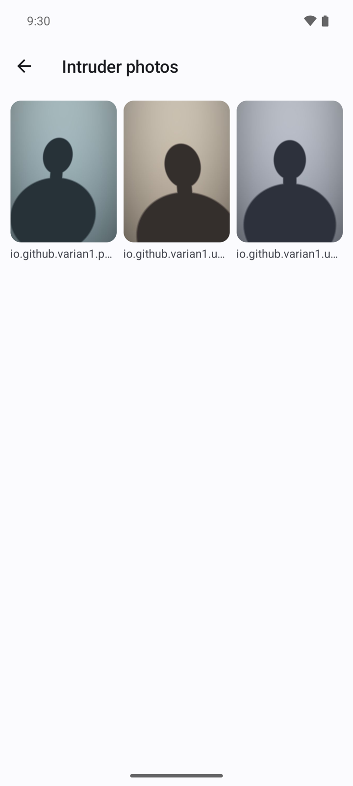

Apa yang dilakukannya
AppLock meletakkan skrin kunci di hadapan aplikasi yang anda pilih. Apabila seseorang membuka aplikasi yang dikunci, mereka mesti memasukkan PIN, corak atau kata laluan anda, atau menggunakan cap jari anda, sebelum dapat melihatnya. Di dalam aplikasi, namanya ditulis "App Lock".
- Tiada akaun. PIN, senarai aplikasi yang dikunci, log keselamatan dan foto penceroboh kekal dalam telefon anda dan tidak pernah dimuat naik.
- Ia boleh mengambil foto orang yang terus memasukkan kod yang salah.
- Kod pemulihan membolehkan anda masuk semula jika anda terlupa PIN.
- Percuma dengan iklan. Mengunci aplikasi sentiasa percuma. Pembelian Premium sekali bayar membuang iklan dan menambah ciri tambahan.
Mulakan
- Buka AppLock dan ketik Get started.
- Di bawah How do you want to unlock?, pilih PIN, Pattern atau Password.
- Masukkannya, kemudian masukkan sekali lagi untuk mengesahkan. PIN mempunyai 6 digit. Corak menyambungkan sekurang-kurangnya 4 titik. Kata laluan mempunyai sekurang-kurangnya 4 aksara. Untuk corak atau kata laluan, ketik Continue selepas setiap kemasukan.
- Pada Save your recovery code, tulis kod 8 digit itu dan simpan di tempat yang selamat. Anda hanya melihatnya sekali, dan itulah satu-satunya cara untuk masuk semula jika anda terlupa PIN, corak atau kata laluan.
- Tandakan I’ve saved this code somewhere safe dan ketik Continue.
Anda kini berada di skrin utama. Skrin ini memaparkan Protection off sehingga anda membenarkan kebenaran yang diperlukan dan mengunci aplikasi pertama anda.
Benarkan kebenaran
AppLock hanya boleh mengunci aplikasi jika Android membenarkannya mengesan aplikasi itu dibuka dan melukis skrin kunci di atasnya. Ini memerlukan dua kebenaran: Accessibility dan Display over other apps. Kebenaran yang lain adalah pilihan.
- Di skrin utama, ketik Finish setup atau Permissions.
- Ketik Accessibility. AppLock mula-mula menunjukkan halaman bernama What Accessibility access does. Bacalah halaman itu.
- Ketik I understand — open settings. Jika anda tidak bersetuju, ketik Not now: tiada apa-apa yang diubah dan tiada tetapan dibuka.
- Pada skrin tetapan Android yang terbuka, hidupkan perkhidmatan untuk AppLock, kemudian kembali ke AppLock.
- Ketik Display over other apps dan benarkannya pada skrin tetapan Android.
- Ketik mana-mana baris lain yang ingin anda benarkan. Baris itu memaparkan Granted apabila selesai.

Mengapa AppLock meminta Accessibility. AppLock menggunakan perkhidmatan Accessibility Android untuk satu tujuan sahaja: mengesan aplikasi mana yang baru muncul di hadapan, supaya ia boleh menunjukkan skrin kunci di atas aplikasi yang anda pilih untuk dilindungi.
- Apa yang dilakukannya: ia hanya memerhati nama aplikasi yang baru dibuka, tidak lebih. Apabila aplikasi yang dikunci dibuka kuncinya atau kod yang salah dimasukkan, nama aplikasi itu disimpan dalam Security log di telefon anda supaya anda boleh menyemaknya.
- Apa yang tidak pernah dilakukannya: ia tidak pernah membaca kandungan skrin, ketikan papan kekunci, kata laluan, mesej atau data lain pada skrin, sama ada dalam AppLock atau aplikasi lain. Tiada apa-apa dihantar keluar dari peranti anda.
- Anda boleh mematikannya pada bila-bila masa dalam Tetapan Android. AppLock kemudian tidak lagi dapat menunjukkan skrin kunci.
Kegunaan kebenaran yang lain.
- Display over other apps: membolehkan skrin kunci muncul di atas aplikasi yang dikunci.
- Usage access: membantu memastikan perlindungan berfungsi dengan baik.
- Notifications: memberi anda makluman tentang gesaan kunci dan percubaan pencerobohan.
- Camera (pilihan): mengambil foto sesiapa yang gagal membuka kunci.
- Notification access: menyembunyikan kandungan pemberitahuan untuk aplikasi yang dikunci.
- Ignore battery optimization: memastikan perlindungan terus berjalan di latar belakang.
Setiap kebenaran digunakan dalam telefon anda sahaja.

Pilih aplikasi untuk dikunci
- Di skrin utama, ketik Lock apps.
- Cari aplikasi itu. Taip namanya dalam Search apps, atau tukar antara tab User, System dan Recent. Recent menunjukkan aplikasi yang paling baru dipasang dahulu.
- Hidupkan suis di sebelah setiap aplikasi yang ingin anda kunci.
- Kembali ke skrin utama. Skrin itu memaparkan Protected dan bilangan aplikasi yang dikunci.

Untuk membuka kunci sesebuah aplikasi secara kekal, buka Lock apps semula dan matikan suisnya.

Buka aplikasi yang dikunci
- Buka aplikasi yang anda kunci. Skrin kunci terus menutupinya.
- Masukkan PIN, corak atau kata laluan anda. Jika anda menghidupkan Unlock with biometrics, anda boleh menggunakan cap jari sebagai ganti.
- Selepas kemasukan yang salah, anda boleh cuba lagi. Selepas terlalu banyak kemasukan yang salah, anda perlu menunggu seketika.
AppLock sendiri dikunci dengan cara yang sama, jadi tiada orang lain boleh mengubah tetapan anda.

Ubah cara penguncian berfungsi
- Di skrin utama, ketik Settings.
- Di bawah Appearance, pilih System, Light atau Dark.
- Di bawah Re-lock, pilih bila aplikasi yang telah anda buka kuncinya dikunci semula: Immediately apabila anda meninggalkannya, On screen off, atau After 5 min.
- Di bawah Security, hidupkan Unlock with biometrics. Anda mengesahkan PIN, corak atau kata laluan anda dahulu. Ini memerlukan cap jari atau wajah yang sudah disediakan pada telefon anda.
- Di bawah Protection, hidupkan Scramble the PIN pad untuk mengacak kekunci nombor, supaya tiada sesiapa dapat meneka PIN anda daripada tempat anda mengetik.
- Hidupkan Hide notification content for locked apps untuk memastikan mesej daripada aplikasi yang dikunci kekal peribadi. Ini memerlukan Notification access dalam Permissions.
- Di bawah Disguise, hidupkan Hide from Recents untuk menyembunyikan AppLock daripada senarai aplikasi terkini.

Lihat siapa yang cuba masuk
- Buka Settings dan hidupkan Intruder photo after failed attempts.
- Buka Permissions dan benarkan Camera.
- Mulai sekarang, selepas tiga kemasukan salah berturut-turut pada skrin kunci, kamera depan mengambil foto.
- Di skrin utama, ketik Intruder photos untuk melihat foto, setiap satu bersama aplikasi yang dibuka.
- Ketik Security log untuk melihat pembukaan kunci, percubaan yang gagal dan perubahan tetapan.

Masuk semula jika anda terlupa PIN
- Buka AppLock. Pada skrin buka kunci, ketik Can’t get in?
- Masukkan kod pemulihan 8 digit yang anda simpan dan ketik Continue.
- Tetapkan PIN, corak atau kata laluan baharu. Anda kemudian mendapat kod pemulihan baharu; kod lama tidak lagi berfungsi.
Untuk mendapatkan kod pemulihan baharu semasa anda masih tahu PIN anda, buka Settings dan ketik Replace recovery code.
Premium
Premium ialah satu bayaran, bukan langganan. Buka Settings dan ketik Unlock Premium. Mengunci aplikasi kekal percuma tanpanya. Premium memberi anda:
- Tiada iklan.
- Fake crash screen (long-press to unlock): aplikasi yang dikunci kelihatan seperti ranap dan bukannya menunjukkan skrin kunci.
- Ikon penyamaran: tukar ikon dan nama AppLock pada skrin utama telefon anda kepada Calculator, Notes atau Weather. Dengan Calculator, anda boleh menghidupkan Open a real calculator instead dan menetapkan Secret code: taip kod itu dan tekan = untuk membuka AppLock. PIN anda juga sentiasa berfungsi.
- Sejarah penuh foto penceroboh. Versi percuma menunjukkan 5 foto terbaharu.
- Export backup: salinan tersulit bagi tetapan dan senarai kunci anda, dilindungi dengan kata laluan pilihan anda. Restore backup adalah percuma.
Jika anda pernah membeli Premium, ketik Restore purchases dalam Settings.
Soalan
Mengapa AppLock memerlukan kebenaran Accessibility? Hanya untuk mengesan aplikasi mana yang baru dibuka, supaya ia boleh menunjukkan skrin kunci di atas aplikasi yang anda kunci. Ia tidak pernah membaca apa yang ada pada skrin anda atau apa yang anda taip. Lihat "Benarkan kebenaran" di atas.
Skrin utama memaparkan "Protection off". Apa masalahnya? Sama ada Accessibility atau Display over other apps belum dibenarkan, atau belum ada aplikasi yang dikunci. Ketik Finish setup untuk membuka senarai kebenaran, kemudian semak Lock apps.
Bolehkah saya menyembunyikan AppLock sepenuhnya? Tidak. Android sentiasa mengekalkan ikon untuk aplikasi yang dipasang. Dengan Premium, anda boleh menukar ikon dan nama kepada penyamaran.
Saya terlupa PIN dan kehilangan kod pemulihan. Bolehkah anda menetapkannya semula? Tidak. AppLock berfungsi luar talian tanpa akaun, jadi tiada tetapan semula melalui e-mel. Kod pemulihan ialah satu-satunya cara untuk masuk semula. Simpan di tempat yang selamat.
Adakah sandaran mengandungi PIN saya atau foto penceroboh? Tidak. Selepas anda memulihkan sandaran, aplikasi meminta anda menetapkan PIN, corak atau kata laluan baharu dahulu.
Privasi
PIN anda, aplikasi yang dikunci, log keselamatan dan foto penceroboh kekal dalam peranti anda dan tidak pernah dimuat naik. Versi percuma menunjukkan iklan daripada Google AdMob. Baca dasar privasi yang lengkap.